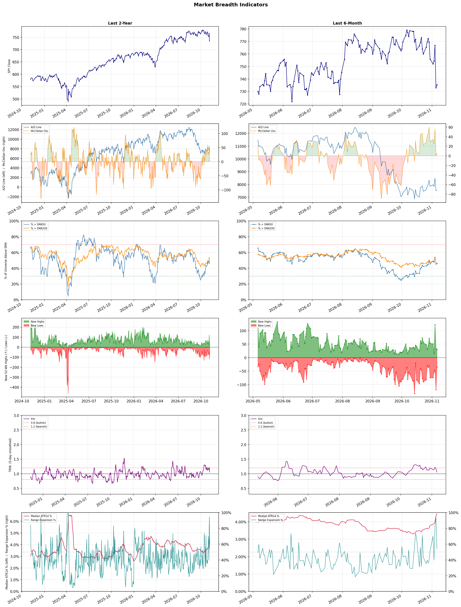

A daily market breadth and sector rotation report for active investors
| Item | Read |
|---|---|
| Regime | Neutral |
| Risk posture | Cautious |
| Universe | 1,313 stocks tracked · 30 new 52-week highs · 30 active swing setups |
| Breadth | only 46.5% of tracked stocks are above SMA50, new lows exceed new highs (35 vs 30) |
| Leadership | Apparel Manufacturing, Health Information Services, and Advertising Agencies |
| Weakest groups | Other Industrial Metals & Mining, Uranium, and Semiconductor Equipment & Materials |
Use this report to prioritize research and chart review; validate entries, stops, liquidity, earnings, and risk before acting.
| Item | Read |
|---|---|
| Primary read | Neutral regime with Cautious risk posture. |
| Research queue | VFC, FIGS, PVH, LEVI, ZGN |
| Leadership focus | Apparel Manufacturing, Health Information Services, and Advertising Agencies |
| Caution list | Other Industrial Metals & Mining, Uranium, and Semiconductor Equipment & Materials |
| Review prompt | Check extension risk, chart location, fundamentals, valuation, and earnings before using any research row. |
| Item | Read |
|---|---|
| Primary read | 3 active risk warnings; use screen output as watchlist input only. |
| Bullish screens | EVRG, AHR, AER, XERS, IBN |
| Bearish screens | SVC, COIN, TRIP, MPT, TDUP |
| Alerts / levels | Automated trigger, stop, ATR, liquidity, reward/risk, and event-risk levels are pending future enrichment. |
| Review prompt | Open the linked chart, define trigger and invalidation, then check liquidity and event risk independently. |
Risk Posture: Cautious — screen backdrop is selective; prioritize research in top-ranked groups
Metric context: McClellan below -50 = elevated selling pressure; below -100 = washout territory. Range Expansion = share of stocks with daily range above their 20-day average. Signal Density = share of tracked names appearing in signal screens.
| Breadth Date | % > SMA50 | % > SMA200 | New Highs | New Lows | McClellan | Median Range | Avg Range | Median ATR14 | Range Expansion | Signal Density |
|---|---|---|---|---|---|---|---|---|---|---|
| 2026-11-06 | 46.5% | 45.9% | 30 | 35 | 5.0 | 3.9% | 5.0% | 4.5% | 54.2% | 3.0% |

Prior comparison date: November 5, 2026
| Metric | Prior | Current | Change |
|---|---|---|---|
| Regime | Neutral | Neutral | unchanged |
| Risk Posture | Defensive | Cautious | changed |
| % > SMA50 | 45.3% | 46.5% | +1.2 pts |
| % > SMA200 | 45.8% | 45.9% | +0.1 pts |
| New Highs | 32 | 30 | -2 |
| New Lows | 119 | 35 | +84 |
Top-10 industries entering: Drug Manufacturers - General. Top-10 industries leaving: Footwear & Accessories. New multi-signal long setups: AER, AHR. New multi-signal short setups: ALLO, AMSC, ARDX, COIN, MPT, OPEN, SVC, TBLA.
| Status | Tickers | Read |
|---|---|---|
| Added | AEE, AER, AHR, ALKS, ALLO, AMSC, APP, ARDX | New technical screen matches vs prior report. |
| Removed | AMH, APLD, ARX, ASO, BDX, BJ, BRUN, CCEP | No longer present in today's technical screen matches. |
| Still Active | EVRG, IBN, QSR | Appeared in both current and prior reports. |
| Promoted | none | Model Screen Score improved by at least 15 points. |
| Downgraded | IBN, QSR | Model Screen Score declined by at least 15 points. |
| Direction | Industry | ETF | Prior Rank | Current Rank | Days | Rank Change |
|---|---|---|---|---|---|---|
| Rose | Restaurants | N/A | 84 | 13 | 42 | +71 |
| Rose | Leisure | N/A | 80 | 18 | 42 | +62 |
| Rose | Solar | TAN | 85 | 28 | 42 | +57 |
| Rose | REIT - Retail | N/A | 75 | 21 | 28 | +54 |
| Rose | Advertising Agencies | N/A | 55 | 3 | 35 | +52 |
Bull: The restaurant industry is experiencing a rising relative strength due to a combination of factors, including a potential rebound in consumer spending as economic conditions stabilize and a shift in dining preferences toward more experiential and casual dining options. Despite recent challenges, such as soft August dining traffic, analysts are optimistic about specific stocks like Darden Restaurants (DRI) and others potentially beating Q3 estimates, indicating resilience and growth potential within the sector. Additionally, the identification of investment opportunities in restaurant ETFs suggests that investors are recognizing the long-term value and recovery potential in this industry, further supporting its upward trend relative to others.
Bear: While the bull thesis highlights a potential rebound in consumer spending and a shift in dining preferences, it overlooks the significant headwinds facing the restaurant sector, including rising labor and food costs, which are squeezing margins. Additionally, the recent soft August dining traffic indicates a troubling trend that could persist, suggesting that consumer appetite for dining out may be waning as inflationary pressures continue to impact disposable income. This combination of cost challenges and declining traffic could undermine the optimistic outlook for specific stocks and the sector as a whole.
Verdict: The restaurant industry's rising relative strength is primarily driven by a rebound in consumer spending and a growing preference for experiential dining, positioning stocks like Darden Restaurants for potential growth. However, key risks include escalating labor and food costs, along with recent declines in dining traffic, which could dampen margins and consumer demand, necessitating close monitoring of economic indicators and consumer behavior. Investors should consider these factors when evaluating potential investments in the sector.
Sources: Google News
Bull: The Leisure industry is experiencing a bullish trend primarily due to a robust recovery in travel and tourism, as highlighted by multiple sources emphasizing growth opportunities amid industry pressures. Factors such as increased consumer spending on leisure activities, a resurgence in travel demand post-pandemic, and the emergence of innovative travel and recreation services driven by AI are likely contributing to this rising relative strength. This positive outlook is further supported by analysts identifying specific stocks in the sector that are poised for growth, indicating confidence in the industry's resilience and potential for profitability.
Bear: While the leisure industry may currently exhibit a rising relative strength trend, this optimism overlooks significant headwinds that could undermine growth. Factors such as rising inflation, ongoing geopolitical tensions, and potential economic downturns could dampen consumer spending on leisure activities, leading to a contraction in travel and tourism. Additionally, the mention of AI-driven innovations may not translate to immediate profitability, as companies could face high implementation costs and competitive pressures that dilute margins, raising questions about the sustainability of the current bullish sentiment.
Verdict: The leisure industry's bullish trend is fundamentally driven by a strong recovery in travel and tourism, fueled by increased consumer spending and the integration of innovative technologies like AI to enhance experiences. However, key risks include rising inflation and geopolitical tensions that could negatively impact consumer confidence and spending, potentially leading to a contraction in demand for leisure activities. Investors should monitor these economic indicators closely to assess the sustainability of the current growth trajectory.
Sources: Google News
Bull: The recent rise in the relative strength of solar stocks can be attributed to a favorable political climate, as indicated by the headlines highlighting the Democrats' early lead in the U.S. midterm elections, which may bolster clean energy policies and investments. Additionally, the strong performance of key solar companies like Enphase, Sunrun, and SolarEdge, as they report earnings, reflects growing investor confidence and optimism in the sector's recovery, further enhancing its appeal against traditional energy sources like oil and gas.
Bear: While the recent uptick in solar stocks may seem promising, it is crucial to recognize that this rally could be driven more by short-term market sentiment rather than sustainable fundamentals. The volatility in solar stocks, as evidenced by the headline about them stumbling over "a stroke of a pen," highlights the sector's susceptibility to regulatory changes and political whims, which can quickly reverse gains. Additionally, the strong performance of individual companies like Enphase and Sunrun may not reflect broader industry health, as these stocks could be benefiting from temporary factors rather than a robust recovery in demand or profitability across the solar sector.
Verdict: The recent rise in solar stocks is primarily driven by a favorable political climate that supports clean energy initiatives, alongside strong earnings reports from leading companies like Enphase and Sunrun, which reflect growing investor confidence in the sector's potential. However, investors should remain cautious of the key risk highlighted by the bear case: the solar industry's vulnerability to regulatory changes and market sentiment, which could quickly undermine this rally if political support wanes or if individual company performance does not translate to broader industry health.
Sources: Google News
Bull: The rising relative strength of the Retail REIT sector can be attributed to resilient consumer demand and limited supply, as highlighted by Yahoo Finance's article on retail REITs poised for growth. This trend is further supported by positive sentiment from Morningstar and The Motley Fool, which emphasize the potential for strong returns in the REIT space as investors seek stable income sources amidst a tightening market, particularly in Canada where the REIT sector is contracting.
Bear: While the rising relative strength of the Retail REIT sector may suggest positive momentum, it's crucial to consider the broader economic landscape, including potential headwinds such as rising interest rates and inflation, which can erode consumer purchasing power and dampen retail sales. Additionally, the contraction of the REIT sector in Canada, as noted by Garry Marr, could indicate underlying weaknesses and a lack of investor confidence, suggesting that the perceived stability and growth potential may be overstated and could lead to increased volatility in the sector.
Verdict: The Retail REIT sector's rising strength is fundamentally driven by resilient consumer demand and limited supply, positioning it as an attractive investment for those seeking stable income in a tightening market. However, key risks include potential headwinds from rising interest rates and inflation, which could undermine consumer purchasing power and dampen retail sales, leading to increased volatility in the sector. Investors should closely monitor these economic indicators while considering exposure to Retail REITs.
Sources: Google News
Bull: The Advertising Agencies sector is experiencing rising relative strength primarily due to its strategic integration of AI technologies, as highlighted in the Bloomberg article about ad agency stocks leveraging AI disruption to their advantage. This technological advancement positions agencies to enhance their service offerings and improve efficiency, thereby attracting more clients and increasing revenues. Additionally, the positive outlook for leading firms like Publicis, contrasted with the challenges faced by competitors like WPP, suggests a consolidation of market power among top players, further bolstering investor confidence in the sector's growth potential.
Bear: While the integration of AI technologies may offer some advantages, the advertising agency sector faces significant headwinds that could undermine this bullish outlook. The rapid evolution of AI tools, as evidenced by Anthropic's recent developments, could lead to increased competition and margin pressure, particularly for firms that are slow to adapt. Moreover, the mixed performance of key players like WPP and Omnicom raises concerns about the overall stability of the sector, suggesting that reliance on AI may not be a panacea for the challenges posed by shifting consumer preferences and economic uncertainties.
Verdict: The advertising agencies sector is likely rising due to the strategic adoption of AI technologies, which enhances efficiency and service offerings, attracting more clients and driving revenue growth. However, the key risk lies in the rapid evolution of AI tools, which could intensify competition and pressure margins for firms that fail to keep pace, potentially undermining the sector's stability and growth prospects. Investors should closely monitor how leading firms adapt to these technological changes and the broader economic landscape.
Sources: Google News
| Direction | Industry | ETF | Prior Rank | Current Rank | Days | Rank Change |
|---|---|---|---|---|---|---|
| Fell | Semiconductor Equipment & Materials | SOXX | 3 | 85 | 35 | -82 |
| Fell | Computer Hardware | XLK | 5 | 84 | 42 | -79 |
| Fell | Electronic Components | XLK | 6 | 82 | 35 | -76 |
| Fell | Semiconductors | SOXX | 7 | 80 | 42 | -73 |
| Fell | Copper | COPX | 4 | 76 | 28 | -72 |
Bear: While profit-taking may explain some of the recent declines, the broader context suggests deeper issues within the Semiconductor Equipment & Materials sector. The ongoing uncertainty in the chip equipment outlook, coupled with potential overcapacity and waning demand in key markets like consumer electronics and data centers, raises concerns about the sustainability of growth projections. Additionally, the volatility in stock prices, as evidenced by the sharp drops in major players, indicates that investor confidence is faltering, suggesting that the sector may be facing a more prolonged downturn rather than a mere correction.
Bull: The Semiconductor Equipment & Materials sector is experiencing a decline in relative strength primarily due to profit-taking after a strong year, as indicated by headlines reporting significant drops in stocks like Applied Materials and Lam Research. Additionally, uncertainty surrounding the chip equipment outlook, highlighted in the Yahoo Finance article, is likely contributing to investor caution, leading to volatility in the sector despite bullish long-term projections for semiconductor stocks. This combination of short-term profit-taking and macroeconomic uncertainty is driving the relative weakness compared to other industries.
Verdict: The Semiconductor Equipment & Materials sector is currently experiencing a decline primarily due to profit-taking after a strong performance, compounded by uncertainty in the chip equipment outlook and concerns over potential overcapacity and waning demand in critical markets. Investors should be cautious, as the bear case highlights the risk of a prolonged downturn driven by faltering confidence and structural issues within the industry, suggesting a need for careful assessment of market conditions before making investment decisions.
Sources: Google News
Bear: While the bull analyst points to a shift in sentiment as a key driver of the Computer Hardware sector's decline, it's crucial to recognize that this sentiment may be rooted in fundamental issues, such as the unsustainable hype around AI hardware and the potential for a significant slowdown in demand as companies reassess their tech investments. Furthermore, the ongoing sell-off by hedge funds suggests not just a temporary reallocation but a deeper concern about the long-term viability of growth in a market increasingly saturated with AI-related products, which could lead to a protracted downturn for the sector as a whole.
Bull: The Computer Hardware sector is experiencing a decline in relative strength primarily due to a shift in investor sentiment away from AI hardware stocks, as highlighted by Business Insider's report on a CIO advocating for reallocating investments into other sectors. Additionally, the ongoing sell-off of chip stocks by hedge funds, as reported by Reuters, reflects concerns about overvaluation and market saturation in the AI hardware space, further contributing to the sector's weakening performance compared to other industries.
Verdict: The Computer Hardware sector's decline is primarily driven by a fundamental reassessment of the sustainability of growth in AI hardware, as investor sentiment shifts in response to concerns about overvaluation and market saturation. The key risk highlighted by the bear case is the potential for a prolonged downturn, as companies may significantly reduce their tech investments amidst an environment of declining demand and increasing skepticism about the long-term viability of AI-related products. Investors should remain cautious and consider diversifying into sectors with more stable growth prospects.
Sources: Google News
Bear: While individual companies like Plexus and Amphenol may report strong earnings, these results do not necessarily reflect the overall health of the Electronic Components sector, which is grappling with persistent supply chain issues and declining demand in key markets. The recent upgrade of the Thai electronic components sector to Overweight could be misleading, as it may represent a short-term regional anomaly rather than a sustainable trend, suggesting that the sector could continue to struggle against a backdrop of broader economic uncertainty and competitive pressures. Additionally, the falling relative-strength trend indicates that investor sentiment is shifting away from the sector, raising concerns about its long-term viability.
Bull: The relative weakness in the Electronic Components sector can be attributed to a combination of macroeconomic factors and competitive dynamics, as highlighted by the recent earnings reports showcasing strong performances from individual companies like Plexus and Amphenol. Despite these positive results, the overall sentiment may be dampened by broader industry challenges, such as supply chain disruptions and fluctuating demand, which could be reflected in the mixed performance of other players like Corning. Additionally, the upgrade of the Thai electronic components sector to Overweight suggests a regional focus that may not yet translate into broader market strength, indicating a potential lag in recovery compared to other industries.
Verdict: The Electronic Components sector's decline is primarily driven by persistent supply chain disruptions and declining demand in key markets, overshadowing the strong earnings reported by individual companies like Plexus and Amphenol. The key risk lies in the potential misinterpretation of the Thai sector's upgrade as a sign of broader recovery, which may not materialize, leading to further investor sentiment deterioration. Investors should remain cautious and monitor macroeconomic indicators and competitive dynamics closely before making significant commitments to the sector.
Sources: Google News
Bear: While the bull analyst points to potential long-term recovery, the recent headlines indicate a troubling trend of declining stock prices for major semiconductor companies, suggesting that the sector is grappling with deeper, systemic issues rather than just short-term volatility. The downward revision of Indie Semiconductor's price target by B. Riley highlights a lack of confidence in the industry's growth prospects, compounded by ongoing macroeconomic pressures and supply chain disruptions that could persist longer than anticipated, ultimately undermining any bullish sentiment and raising concerns about the sustainability of demand in a potentially cooling global economy.
Bull: The semiconductor industry is currently experiencing a decline in relative strength primarily due to macroeconomic pressures and sector-specific challenges, as indicated by headlines highlighting significant stock price drops for key players like Qualcomm, Micron, and AMD. Additionally, B. Riley's cut of Indie Semiconductor's price target reflects a broader sentiment of caution within the sector, likely driven by concerns over demand fluctuations and supply chain disruptions, which are affecting investor confidence and leading to short-term volatility. However, the presence of bullish articles showcasing leading companies like AMD suggests that there remains potential for recovery and growth in the long term.
Verdict: The semiconductor industry's decline is primarily driven by persistent macroeconomic pressures and sector-specific challenges, including demand fluctuations and ongoing supply chain disruptions, which have led to significant stock price drops for major players. The key risk from the bear case is that these systemic issues may not be resolved in the near term, potentially undermining recovery prospects and raising concerns about the sustainability of demand in a cooling global economy. Investors should remain cautious and closely monitor economic indicators and industry developments before making significant commitments in this sector.
Sources: Google News
Bear: While the bull analyst attributes the falling relative strength of copper to short-term tariff uncertainties and a shift in investment focus towards emerging sectors like AI, this perspective overlooks the fundamental supply-demand dynamics at play. With increasing concerns over global economic slowdown, particularly in major copper-consuming countries, and potential oversupply issues exacerbated by new mining projects coming online, the long-term outlook for copper remains precarious. Furthermore, the recent headlines highlighting significant drops in copper stocks indicate a broader market sentiment that is increasingly skeptical of copper's near-term recovery, suggesting that the current weakness may not be merely a temporary reaction to volatility but rather a reflection of deeper, structural challenges in the industry.
Bull: Copper's relative strength is likely falling due to recent market volatility driven by tariff uncertainties, as highlighted by the headline about copper stocks tumbling amid tariff doubt. This uncertainty can dampen investor sentiment and lead to short-term sell-offs, as seen with Freeport-McMoRan and other major players experiencing significant drops. Additionally, the focus on emerging sectors like AI, as mentioned in the Seeking Alpha article, may divert investment away from traditional commodities like copper, further contributing to its relative weakness.
Verdict: The recent decline in copper's relative strength is primarily driven by a combination of short-term market volatility due to tariff uncertainties and a broader shift in investment focus towards emerging sectors like AI, which may be diverting capital away from traditional commodities. However, the key risk highlighted by the bear case is the potential for a sustained global economic slowdown, particularly in major copper-consuming countries, coupled with oversupply from new mining projects, which could lead to a more prolonged downturn in copper prices. Investors should closely monitor these supply-demand dynamics and macroeconomic indicators to assess the potential for further declines in copper's value.
Sources: Google News
| Industry | Rank | ETF | 7d | 14d | 28d | 42d | Chg 42d | Size | 20D | 60D | Composite | Active Setups |
|---|---|---|---|---|---|---|---|---|---|---|---|---|
| Apparel Manufacturing | 1 | N/A | 4 | 10 | 26 | 52 | +51 | 6 | 18.8% | 14.0% | 0.956 | 0 |
| Health Information Services | 2 | N/A | 3 | 6 | 2 | 3 | +1 | 12 | 9.6% | 28.3% | 0.938 | 1 |
| Advertising Agencies | 3 | N/A | 50 | 38 | 46 | 38 | +35 | 7 | 19.7% | 7.6% | 0.921 | 0 |
| Specialty Retail | 4 | XRT | 11 | 12 | 33 | 20 | +16 | 13 | 18.3% | 11.4% | 0.916 | 0 |
| Discount Stores | 5 | XRT | 9 | 8 | 7 | 15 | +10 | 7 | 8.5% | 9.3% | 0.903 | 0 |
| Insurance Brokers | 6 | N/A | 7 | 5 | 41 | 33 | +27 | 6 | 12.7% | 3.4% | 0.887 | 0 |
| Household & Personal Products | 7 | XLP | 6 | 4 | 9 | 26 | +19 | 11 | 11.2% | 15.3% | 0.885 | 0 |
| Medical Care Facilities | 8 | IHF | 5 | 13 | 20 | 17 | +9 | 9 | 10.3% | 11.1% | 0.862 | 0 |
| Beverages - Non-Alcoholic | 9 | XLP | 12 | 22 | 32 | 59 | +50 | 7 | 11.6% | 5.5% | 0.860 | 0 |
| Drug Manufacturers - General | 10 | IHE | 10 | 20 | 17 | 11 | +1 | 14 | 8.4% | 7.5% | 0.860 | 1 |
Rank columns (7d–42d) show the industry's rank that many trading days ago — lower is stronger. Chg 42d = rank change vs 42 trading days ago — positive means the industry moved up. 20D and 60D are the mean stock return within the industry over that period. Active Setups: count of today's swing-trade candidates from this industry appearing across all signal screens.
| Industry | Rank | ETF | 7d | 14d | 28d | 42d | Chg 42d | Size | 20D | 60D | Composite | Active Setups |
|---|---|---|---|---|---|---|---|---|---|---|---|---|
| Other Industrial Metals & Mining | 87 | N/A | 86 | 85 | 79 | 66 | -21 | 21 | -22.0% | -35.3% | 0.035 | 0 |
| Uranium | 86 | URA | 87 | 87 | 83 | 82 | -4 | 6 | -19.8% | -36.3% | 0.037 | 0 |
| Semiconductor Equipment & Materials | 85 | SOXX | 81 | 77 | 14 | 9 | -76 | 17 | -30.8% | -36.1% | 0.063 | 0 |
| Computer Hardware | 84 | XLK | 74 | 62 | 21 | 5 | -79 | 15 | -28.6% | -34.5% | 0.078 | 0 |
| Electrical Equipment & Parts | 83 | XLI | 84 | 86 | 71 | 49 | -34 | 12 | -20.2% | -37.1% | 0.079 | 0 |
| Electronic Components | 82 | XLK | 78 | 81 | 13 | 8 | -74 | 10 | -26.1% | -29.4% | 0.082 | 0 |
| Communication Equipment | 81 | IYZ | 65 | 69 | 18 | 37 | -44 | 15 | -27.0% | -30.5% | 0.088 | 0 |
| Semiconductors | 80 | SOXX | 72 | 67 | 11 | 7 | -73 | 37 | -26.8% | -27.8% | 0.107 | 0 |
| Auto Parts | 79 | N/A | 82 | 78 | 64 | 43 | -36 | 19 | -14.0% | -24.7% | 0.122 | 0 |
| Oil & Gas Equipment & Services | 78 | XES | 51 | 60 | 61 | 29 | -49 | 17 | -17.4% | -22.5% | 0.123 | 0 |
Rank columns (7d–42d) show the industry's rank that many trading days ago — lower is stronger. Chg 42d = rank change vs 42 trading days ago — positive means the industry moved up. 20D and 60D are the mean stock return within the industry over that period. Active Setups: count of today's swing-trade candidates from this industry appearing across all signal screens.
These are research candidates from top-ranked stocks, capped at five names per industry to avoid over-concentration. Returns shown (60D, 120D, 250D) are historical — they reflect where prices have already moved, not forward expectations. Extension Risk flags names that may require extra patience or a better entry point. They are not buy signals.
Chart: TV = TradingView chart (opens in browser); PDF = local chart file (if downloaded).
| Ticker | Name | Industry | Industry Rank | Market Cap | 60D Hist | 120D Hist | 250D Hist | Extension Risk | Research Reason | Chart |
|---|---|---|---|---|---|---|---|---|---|---|
| VFC | VF Corp | Apparel Manufacturing | 1 | N/A | 39.0% | 22.0% | 42.2% | Constructive | Top-ranked in industry | TV |
| FIGS | FIGS Inc | Apparel Manufacturing | 1 | N/A | 33.6% | 72.3% | 131.8% | Constructive | Top-ranked in industry | TV |
| PVH | PVH Corp | Apparel Manufacturing | 1 | N/A | 10.2% | 12.1% | 17.5% | Constructive | Top-ranked in industry | TV |
| LEVI | Levi Strauss & Co. | Apparel Manufacturing | 1 | N/A | 2.8% | 10.7% | 16.1% | Constructive | Top-ranked in industry | TV |
| ZGN | Ermenegildo Zegna NV | Apparel Manufacturing | 1 | N/A | 1.2% | 12.0% | 44.9% | Constructive | Top-ranked in industry | TV |
| SDGR | Schrodinger | Health Information Services | 2 | N/A | 61.5% | 147.5% | 67.7% | Extended | Top-ranked in industry; extended | TV |
| CERT | Certara | Health Information Services | 2 | N/A | 47.9% | 164.3% | 39.0% | Extended | Top-ranked in industry; extended | TV |
| TEM | Tempus AI | Health Information Services | 2 | N/A | 40.1% | 74.3% | 6.3% | Constructive | Top-ranked in industry | TV |
| HNGE | Hinge Health | Health Information Services | 2 | N/A | 32.4% | 111.6% | 160.2% | Extended | Top-ranked in industry; extended | TV |
| TDOC | Teladoc Health | Health Information Services | 2 | N/A | 26.0% | 38.1% | 16.5% | Constructive | Top-ranked in industry | TV |
| APP | Applovin | Advertising Agencies | 3 | N/A | 25.1% | -20.5% | -36.9% | Constructive | Top-ranked in industry | TV |
| STGW | Stagwell | Advertising Agencies | 3 | N/A | 25.0% | 81.3% | 141.5% | Constructive | Top-ranked in industry | TV |
| MGNI | Magnite | Advertising Agencies | 3 | N/A | 11.4% | 104.6% | 81.4% | Extended | Top-ranked in industry; extended | TV |
| EVC | Entravision Communications | Advertising Agencies | 3 | N/A | 1.9% | 13.7% | 226.2% | Constructive | Top-ranked in industry | TV |
| OMC | Omnicom Group | Advertising Agencies | 3 | N/A | -1.2% | 20.6% | 21.1% | Lagging | Top-ranked in industry; lagging | TV |
| ARHS | Arhaus | Specialty Retail | 4 | N/A | 46.3% | 141.7% | 51.3% | Extended | Top-ranked in industry; extended | TV |
| ASO | Academy | Specialty Retail | 4 | N/A | 37.9% | 35.4% | 48.6% | Constructive | Top-ranked in industry | TV |
| BBWI | Bath & Body Works | Specialty Retail | 4 | N/A | 15.8% | 34.6% | -2.7% | Constructive | Top-ranked in industry | TV |
| EVGO | EVgo Inc | Specialty Retail | 4 | N/A | 10.9% | -4.7% | -46.5% | Constructive | Top-ranked in industry | TV |
| WOOF | Petco Health and Wellness | Specialty Retail | 4 | N/A | 3.5% | 16.1% | -5.1% | Constructive | Top-ranked in industry | TV |
These are technical screen matches from existing signal files. They are not trade recommendations. Trigger, stop, ATR, liquidity, reward/risk, and event risk still require separate validation until those inputs are available.
Model Screen Score is weighted by signal count, industry rank, freshness, and setup type. It is not a probability of profit, expected return, or suitability rating. Industry cap: max 3 candidates per industry.
Signal glossary: Momentum Pullback = stock in an uptrend that has pulled back 10–30% and shows re-entry conditions. MA Compression = short- and long-term moving averages converging, often preceding a directional move. Three-Day Up/Down = three consecutive closes in the same direction. New 52Wk High/Low = price reached a new annual extreme.
Chart: TV = TradingView chart (opens in browser); PDF = local chart file (if downloaded).
| Ticker | Industry | Setups | Close | Industry Rank | Signal Count | Model Screen Score | Reason | Chart |
|---|---|---|---|---|---|---|---|---|
| EVRG | Utilities - Regulated Electric | MA Compression; New 52Wk High | 87.54 | 22 | 2 | 82 | Multi-signal; new-high strength | TV |
| AHR | REIT - Healthcare Facilities | MA Compression; New 52Wk High | 57.91 | 38 | 2 | 75 | Multi-signal; new-high strength | TV |
| AER | Rental & Leasing Services | New 52Wk High; Three-Day Up | 169.64 | 47 | 2 | 65 | Multi-signal; new-high strength | TV |
| XERS | Biotechnology | New 52Wk High; Three-Day Up | 15.20 | 51 | 2 | 65 | Multi-signal; new-high strength | TV |
| IBN | Banks - Regional | New 52Wk High; Three-Day Up | 33.89 | 53 | 2 | 65 | Multi-signal; new-high strength | TV |
| TEM | Health Information Services | Momentum Pullback | 76.05 | 2 | 1 | 65 | Single-signal; top industry pullback | TV |
| SDGR | Health Information Services | Three-Day Up | 29.82 | 2 | 1 | 55 | Single-signal; top industry setup | TV |
| APP | Advertising Agencies | Three-Day Up | 391.22 | 3 | 1 | 55 | Single-signal; top industry setup | TV |
| BLMN | Restaurants | Momentum Pullback | 9.75 | 13 | 1 | 50 | Single-signal; pullback setup | TV |
| BMY | Drug Manufacturers - General | MA Compression | 62.14 | 10 | 1 | 45 | Single-signal; top industry setup | TV |
| QSR | Restaurants | MA Compression | 77.69 | 13 | 1 | 45 | Single-signal; compression setup | TV |
| ALKS | Drug Manufacturers - Specialty & Generic | Momentum Pullback | 45.90 | 17 | 1 | 42 | Single-signal; pullback setup | TV |
| WEN | Restaurants | Three-Day Up | 8.15 | 13 | 1 | 40 | Single-signal; upside pattern | TV |
| CBOE | Financial Data & Stock Exchanges | Three-Day Up | 353.27 | 15 | 1 | 40 | Single-signal; upside pattern | TV |
| ELAN | Drug Manufacturers - Specialty & Generic | MA Compression | 25.74 | 17 | 1 | 37 | Single-signal; compression setup | TV |
| REG | REIT - Retail | MA Compression | 74.84 | 21 | 1 | 37 | Single-signal; compression setup | TV |
| AEE | Utilities - Regulated Electric | MA Compression | 112.85 | 22 | 1 | 37 | Single-signal; compression setup | TV |
Bearish setups — stocks making new lows or showing persistent downside patterns. Validate carefully before acting.
| Ticker | Industry | Setups | Close | Industry Rank | Signal Count | Model Screen Score | Reason | Chart |
|---|---|---|---|---|---|---|---|---|
| SVC | REIT - Hotel & Motel | New 52Wk Low; Three-Day Down | 5.20 | 11 | 2 | 55 | Multi-signal; new-low weakness | TV |
| COIN | Financial Data & Stock Exchanges | New 52Wk Low; Three-Day Down | 134.76 | 15 | 2 | 55 | Multi-signal; new-low weakness | TV |
| TRIP | Travel Services | New 52Wk Low; Three-Day Down | 7.00 | 31 | 2 | 40 | Multi-signal; new-low weakness | TV |
| MPT | REIT - Healthcare Facilities | New 52Wk Low; Three-Day Down | 1.81 | 38 | 2 | 40 | Multi-signal; new-low weakness | TV |
| TDUP | Internet Retail | New 52Wk Low; Three-Day Down | 1.28 | 41 | 2 | 35 | Multi-signal; new-low weakness | TV |
| VRRM | Information Technology Services | New 52Wk Low; Three-Day Down | 2.19 | 44 | 2 | 35 | Multi-signal; new-low weakness | TV |
| TKC | Telecom Services | New 52Wk Low; Three-Day Down | 4.57 | 48 | 2 | 35 | Multi-signal; new-low weakness | TV |
| ALLO | Biotechnology | New 52Wk Low; Three-Day Down | 1.04 | 51 | 2 | 35 | Multi-signal; new-low weakness | TV |
| ARDX | Biotechnology | New 52Wk Low; Three-Day Down | 2.88 | 51 | 2 | 35 | Multi-signal; new-low weakness | TV |
| OPEN | Real Estate Services | New 52Wk Low; Three-Day Down | 1.40 | 59 | 2 | 35 | Multi-signal; new-low weakness | TV |
| TROX | Chemicals | New 52Wk Low; Three-Day Down | 2.51 | 66 | 2 | 25 | Multi-signal; new-low weakness | TV |
| AMSC | Specialty Industrial Machinery | New 52Wk Low; Three-Day Down | 23.39 | 68 | 2 | 25 | Multi-signal; new-low weakness | TV |
| TBLA | Internet Content & Information | New 52Wk Low; Three-Day Down | 2.00 | 69 | 2 | 25 | Multi-signal; new-low weakness | TV |
How To Use This Report
| Use | Purpose |
|---|---|
| Market map | Start with breadth, regime, risk warnings, and what changed since the prior report. |
| Industry scan | Use leading, deteriorating, rising, and declining industries to focus research. |
| Research queue | Treat long-term candidates as names for deeper fundamental, valuation, and chart review. |
| Technical review | Treat bullish and bearish screen matches as watchlist inputs that require independent trigger, stop, liquidity, and event-risk checks. |
| Source follow-up | Use chart links and source files to verify raw inputs before relying on any row. |
What This Report Is Not
| Not | Meaning |
|---|---|
| Investment advice | The report does not evaluate personal objectives, risk tolerance, tax situation, account type, or suitability. |
| Buy/sell recommendation | Named tickers are research candidates or screen matches, not recommendations to transact. |
| Price target | The report does not provide fair value estimates, targets, or expected returns. |
| Trade plan | Trigger, stop, sizing, reward/risk, liquidity, and event-risk review remain separate user work. |
| Performance claim | Model Screen Score is not validated historical performance or a forecast of future results. |
| Item | Note |
|---|---|
| Version | Daily Report Methodology v1 |
| Model Screen Score | Screen-fit rank based on signal count, industry rank, freshness, and setup type. |
| Not predictive proof | The score is not expected return, probability of profit, historical validation, or suitability analysis. |
| Industry ranks | Composite industry ranks use existing daily ranking outputs and historical rank columns when available. |
| Research candidates | Long-term rows are research candidates from ranked stocks and leading industries, with historical returns labeled as historical only. |
| Technical matches | Bullish and bearish rows are screen matches requiring independent chart, trigger, stop, liquidity, and event-risk review. |
| Source | Status | Rows | Path |
|---|---|---|---|
| Market breadth | present | 1255 | breadth_20261106.csv |
| Industry composite rankings | present | 87 | all_industry_composite_20261106.csv |
| Top ranked stocks | present | 92 | top_ranked_composite_20261106.csv |
| All ranked stocks | present | 1313 | all_stocks_composite_sorted_20261106.csv |
| Top momentum pullbacks | present | 1466 | top_momentum_pullbacks_20261106.csv |
| MA compression | present | 1466 | ma_compression_stocks_20261106.csv |
| Three-day up/down | present | 101 | three_day_up_down_stocks_20261106.csv |
| New 52-week members | present | 65 | breadth_new_52wk_members_20261106.csv |
This report is generated from automated technical screens and is for informational and research purposes only. It is not investment advice, a solicitation, or a recommendation to buy or sell any security. Past performance is not indicative of future results. You are solely responsible for your own investment decisions. Consult a licensed financial advisor before acting on any information herein.